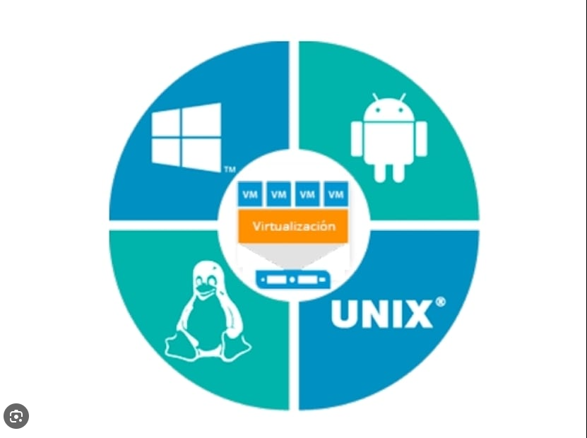
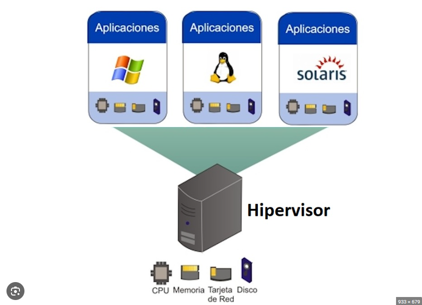
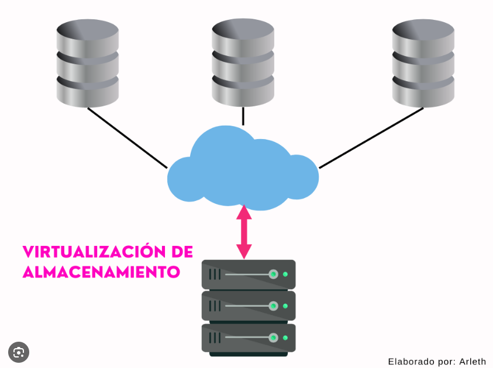
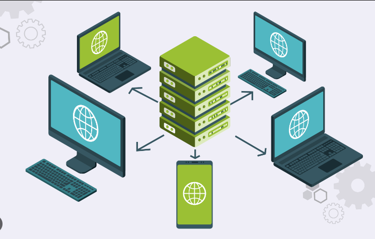
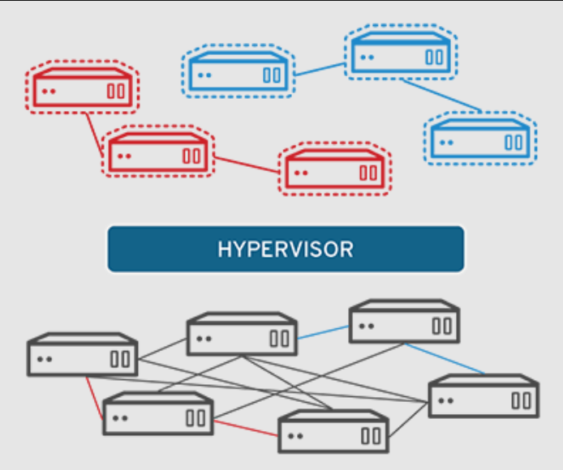
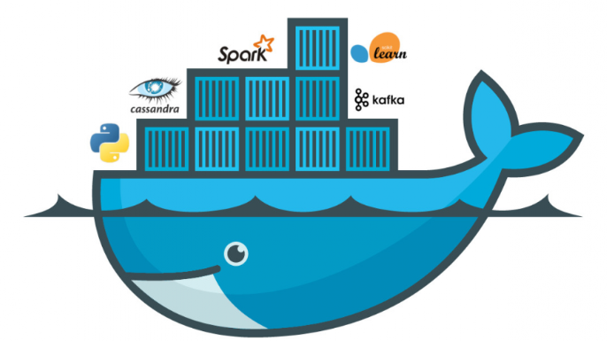
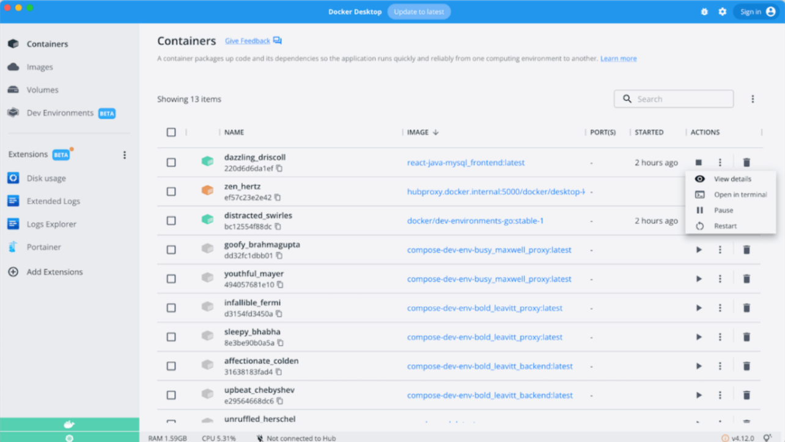
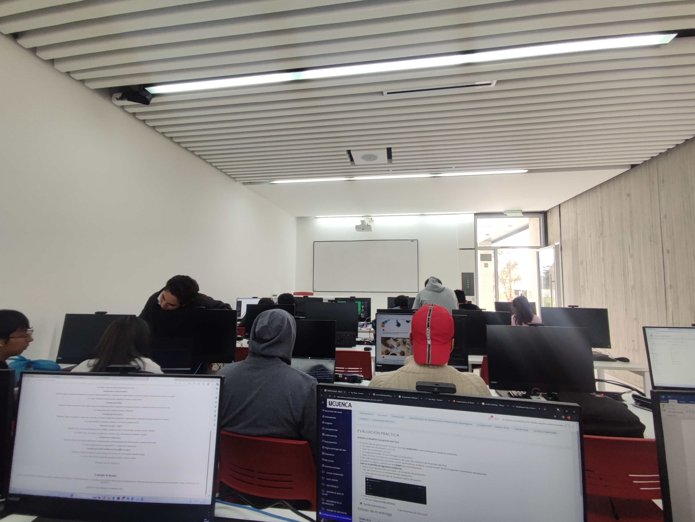

La virtualización es una tecnología que se puede usar para crear representaciones virtuales de servidores, almacenamiento, redes y otras máquinas físicas. El software virtual imita las funciones del hardware físico para ejecutar varias máquinas virtuales a la vez en una única máquina física. Las empresas recurren a la virtualización para utilizar sus recursos de hardware de manera eficiente y obtener retornos mayores de sus inversiones. También potencia los servicios de computación en la nube que ayudan a las organizaciones a administrar la infraestructura de manera más eficaz. Es importante la virtualización, porque es posible interactuar con cualquier recurso de hardware con mayor flexibilidad. Los servidores físicos consumen electricidad, ocupan espacio de almacenamiento y necesitan mantenimiento. Con frecuencia el acceso a estos está limitado por la proximidad física y el diseño de la red. La virtualización resuelve todas estas limitaciones al abstraer la funcionalidad del hardware físico en el software. Es posible administrar, mantener y utilizar la infraestructura de hardware como una aplicación en la web.
Existen una gran variedad de tipos de virtualización dependiendo del uso que se le quiera dar, pero se podría clasificar en:
Virtualización de Sistemas Operativos: Este tipo de virtualización permite la creación de varias instancias o servidores virtuales en un solo servidor físico mediante un software llamado hipervisor. Cada máquina virtual puede tener su propio sistema operativo y funciona de manera independiente, lo que mejora la eficiencia y permite un uso más óptimo de los recursos del servidor físico.
Virtualización del Hardware: Esta forma de virtualización transforma el hardware físico en hardware virtual a través de máquinas virtuales. Un único servidor puede dividir su rendimiento para crear varios servidores virtuales más pequeños. Las ventajas incluyen una mayor escalabilidad y ahorro de costos en hardware.
Virtualización a Nivel de Sistema Operativo: En este tipo de virtualización, un servidor físico tiene un único sistema operativo, y se crean instancias aisladas que contienen réplicas del sistema operativo principal. A diferencia de la virtualización de sistemas operativos, donde cada instancia tiene un sistema operativo distinto, aquí comparten el mismo sistema operativo principal.
Virtualización del Almacenamiento: Se logra unificando varios dispositivos de almacenamiento en red para crear la apariencia de una única unidad. Esto mejora el rendimiento, la administración, la seguridad y la disponibilidad de almacenamiento. Permite un acceso más rápido a los datos al utilizar varias unidades de almacenamiento.
Virtualización de Escritorio: Consiste en tener servidores en un data center con máquinas virtuales que ejecutan sistemas operativos independientes. Todo el procesamiento ocurre de forma remota, y los usuarios reciben en sus dispositivos una imagen del escritorio para interactuar. Ofrece mayor seguridad, fácil mantenimiento y la posibilidad de acceder al escritorio desde diferentes equipos.
Virtualización de Redes: Consiste en crear redes virtuales sobre redes físicas o reproducir redes físicas en software. Permite la creación de redes virtuales sobre una red física existente, ofreciendo funciones similares a una red física pero con ventajas como independencia, funcionalidades adicionales, seguridad y aislamiento de cargas de trabajo en entornos empresariales.
Docker es un sistema operativo para contenedores. De manera similar a cómo una máquina virtual virtualiza (elimina la necesidad de administrar directamente) el hardware del servidor, los contenedores virtualizan el sistema operativo de un servidor. Docker se instala en cada servidor y proporciona comandos sencillos que puede utilizar para crear, iniciar o detener contenedores.
 Esta imagen corresponde a una imagen que se tomo el dia 9 de diciembre del 2023 